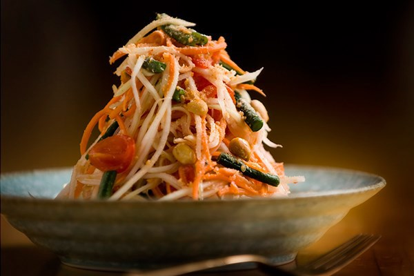
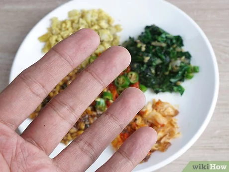
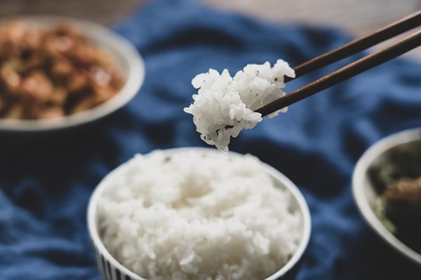
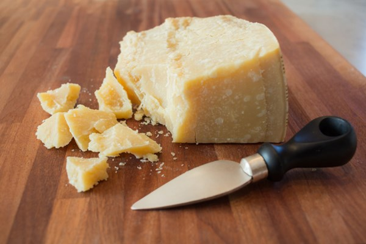
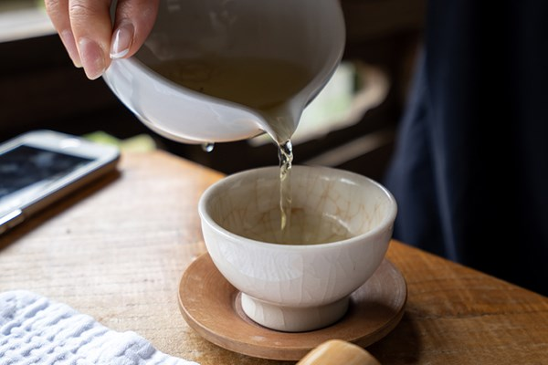
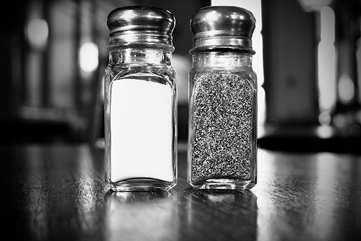
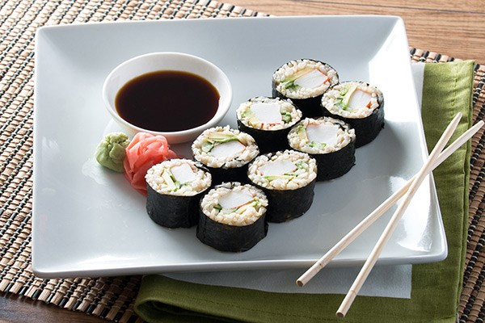
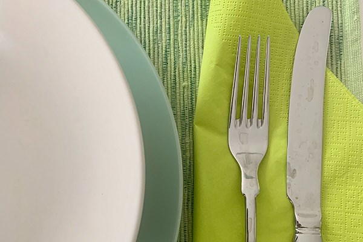

username
Each culture has their own unique traditions. Today, we bring to you 10 interesting food traditions. Before you set out your own adventure, get to know some these interesting traditions.
Thailand: Don't Use a Fork
In Thailand, putting food to your mouth using a fork is considered to be rude.
A fork can only be used to help food onto a spoon and should not be used for your meal.

{kind=link}
Japan: Slurp Your Noodles
Slurping your noodles is not only acceptable in Japan, but also welcome. The Japanese believe it makes food taste better.
{kind=link}
Ethiopia: Eat With Your Right Hand
Always use your right hand when eating Ethiopian food.

{kind=link}
Chicago, United States: Just Mustard
It is unheard of to put anything but mustard on a Chicago hot dog.
{kind=link}
China: Proper Chopstick Etiquette
Proper chopstick etiquette is really important in China. Never ever rest your chopsticks upright in a bowl of rice or wave chopsticks at another person.

{kind=link}
Italy: Avoid Parmesan + Seafood
The act of mixing seafood and cheese was unheard of in Italy.

{kind=link}
Korea: Don't Pour Your Own Drink
In Korean culture, it is customary to never pour your own drink, it is proper etiquette to wait or request someone else pour it for you.

{kind=link}
Portugal: No Salt and Pepper
In Portugal, asking for salt and pepper in a restaurant is a huge offense to the chef and their cooking abilities.

{kind=link}
Japan: Don't Rub Your Chopsticks Together
When in a sushi restaurant, this is highly offensive and suggests that they are using low-end chopsticks.

{kind=link}
Brazil: Always Use a Fork and Knife
In Brazil eating with your hands is not acceptable — and a fork and knife are a must. You must always use utensils even when eating a sandwich!

{kind=link}